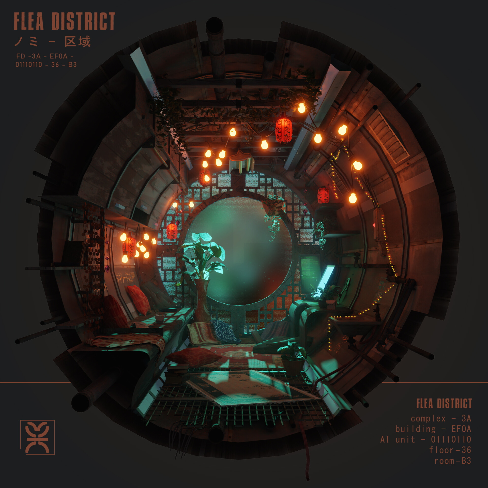
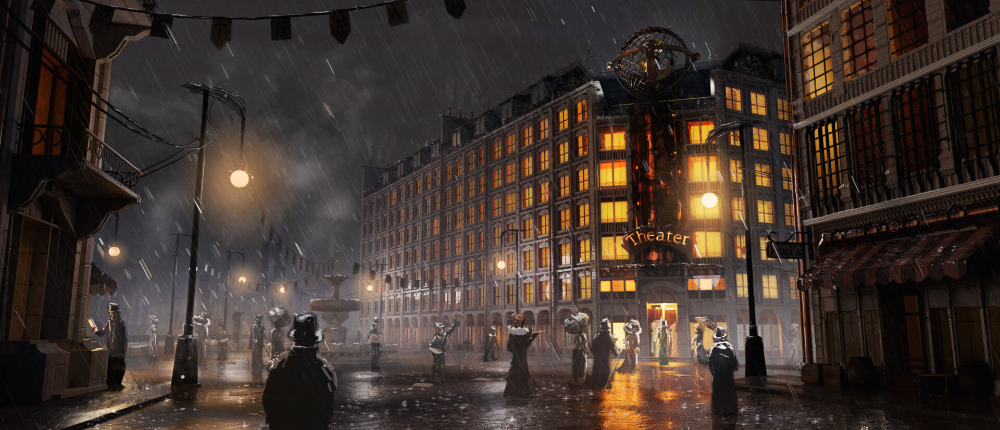
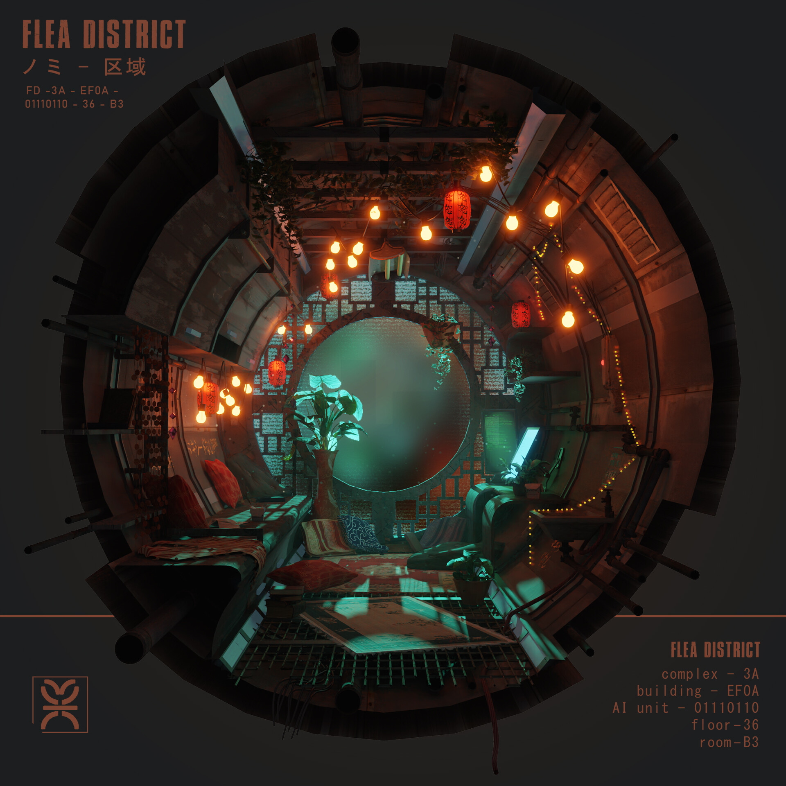
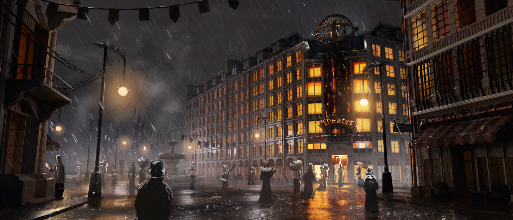

Marek Trzaskalik
O mně
Vystudoval jsem bakaláře na FITu, obor počítačová grafika. Nyní pokračuji na magisterském studiu, obor webové inženýrství. Mezi mé zajmy patří kreslení, design, počítačové hry, cvičení, cestování atd... Jsem asi nejhorší programátor, který kdy studoval (a bc i dostudoval) FIT... Všechen můj zájem jde spíše do vizuální a funkční stránky věci. Věnuji se hlavně UI/UX designu webových a mobilních aplikací. Vedle toho dělám klasickou grafiku, tiskoviny, bannery, letáky nebo dummy webové stránky.
Wanna be gameDev
Mým největším cílem je se dostat do herního průmyslu a vytvářet počítačové hry. Do této věci jde i všechen můj volný čas (který není...) Mám za sebou nějaké zkušenosti, ať už pro menší indie studia nebo práce na školních projektech nebo akcích (PVR, VHS, GameJam, APH, BLE). Zkušenosti mám v Unrealu. Věnuji se hlavně concept artu, environment designu a UI/UX designu.
 



Portfolio více mých prací
Kdybyste měli někdo ambiciozní nápad na hru a hledali grafika, určitě můžete napsat!
Nápady
- Když už ten FIT přeci jen studuji, rád bych propojil kreslení, hry a "programování". Rád bych si zkusil část pracovní výplně technického artisty - procedurální generování terénu, budov, předmětů, geometry nodes, Houdiny...
- Další variantou by bylo kreslení a animace v canvasu (inspirace prvním cvičením), což bych mohl využít dále při tvorbě webových stránek.
Kontakty
- Discord: MarkT#3508
- Email: marek.trzaskalik@gmail.com
- Email: trzasmar@fit.cvut.cz